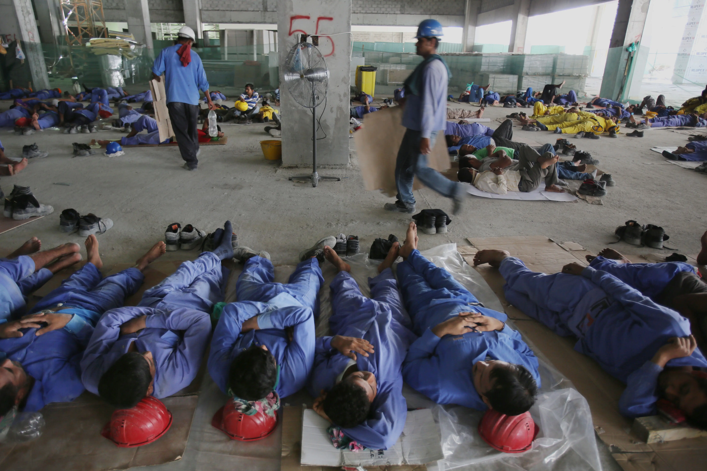

Arabia Saudita: a quando la Rivoluzione?
Una delle poche monarchie assolute rimaste al mondo. Un luogo di vanità ed apparaente ricchezza, la definizione di capitalismo, dove per pochi ricchissimi lavorano milioni di sfruttati. Come va avanti questa situazione? Ci sarà mai una rivoluzione di stampo socialista in Arabia Saudita? Difficile a dirsi. In questo articolo analizziamo tutti i fattori che fino ad adesso hanno bloccato la rivoluzione, ma anche quelli che in futuro potrebbe prepararne l'arrivo. Non analizzeremo invece la possibilità di collasso del paese sotto pressioni di livello etnico-religioso.
Prima di tutto dobbiamo capire da dove arriva quest'immensa ricchezza che tiene soggiogate milioni di persone, anche se la risposta è semplice e nota: il petrolio. L'élite saudita riesce a mantenere i propri privilegi attraverso un governo autocratico colluso che dispone di una grande forza di polizia e militare ben capace di respingere qualunque tentativo di insurrezione, anche armata; la seconda infatti conta 200 mila unità tra le sue file e dispone di armamenti di alto livello forniti dal terzo maggior budget militare al mondo. L'oppressione politica viene poi celata dietro apparenti libertà civili, date dall'introduzione del capitalismo anche nella società interna, perciò la classe media non può essere d'aiuto in una situazione del genere e tutta la responsabilità di un'eventuale rivoluzione ricade sulla classe lavoratrice.
Il maggiore ostacolo attuale alla Rivoluzione è la stessa classe lavoratrica, o meglio la sua componente demografica. Infatti la vera classe operaia è costituita principalmente da immigrati maschi di prima generazione, specialmente tra i 32 e i 44 anni, che costituisce più di un terzo della popolazione: 13 milioni di lavoratori sottopagati senza la cittadinanza saudita. La loro cittadinanza estera è probabilmente il maggior fattore che limita la diffusione della volontà della Rivoluzione.
Un'ultima, e forse unica, speranza può essere quella di una Rivoluzione collaterale. Pressioni da parte della componente Sciita della popolazione spinta dal Governo Iraniano; un intoppo nella successione al trono nella linea dinastica; una crisi che porti all'abbassamento dei prezzi del petrolio; un'intervento militare fallito. Tutti questi sono fattori che potrebbero portare instabilità nel Regno Saudita e spianare la strada alla Rivoluzione. Detto questo è improbabile che l'Arabia Saudita abbia "i giorni contati", ma di certo deve guardarsi le spalle da certi pericoli, perché non si possono sfruttare milioni di lavoratori per anni senza pagarne le consueguenze.
Indipendente Trockista12 Marzo 2022